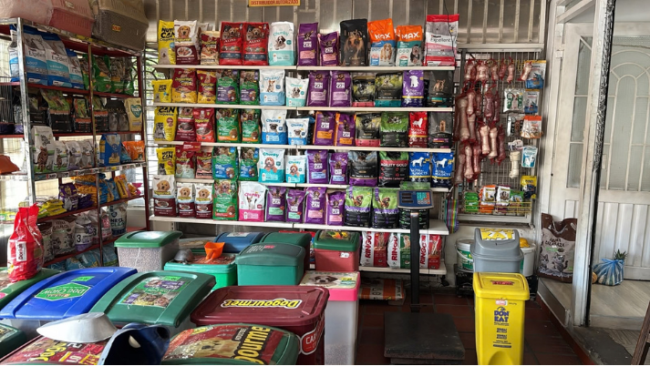
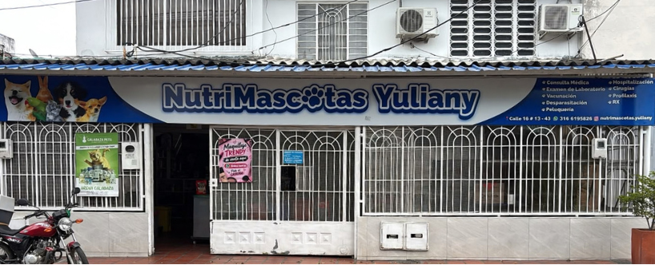
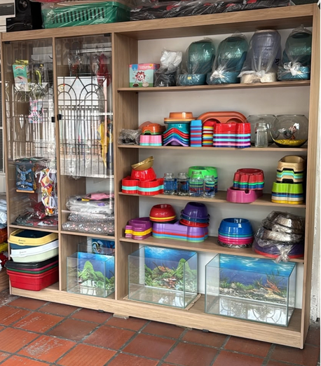
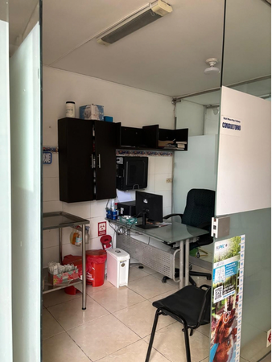
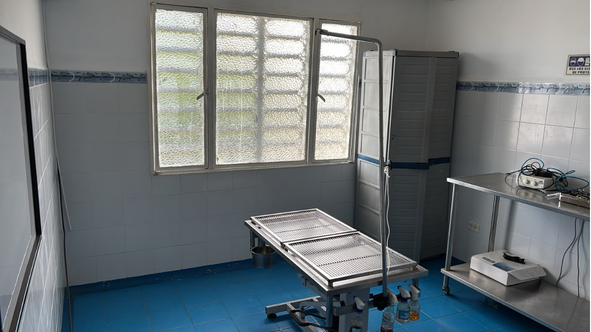

En el 2008 nace la idea de Gloria Moncada en formar un negocio en su casa para poder compartir mas con sus hijos, esto comienza siendo una pequeña papeleria en el barrio la libertad, pero su anterior jefa le ofrecio que vendiera concentrado para Animales dentro del establecimiento, a lo cual acepto, y aqui comienza una historia de Amor por siempre dar lo mejor a cada mascota que se acercaba al lugar, poco a poco comenzo a ser mas que concentrado, se integro peluqueria canina, se amplio el lugar y tambien los servicios para poder abarcar lo que es una veterinaria.
Nuestra Pasion por los Animales
Nuestras instalaciones
Contamos con:
- Zona de Petshop
- Zona de peluqueria
- Espacio de espera
- Consultorio veterinario
- Sala de cirugias
- Espacio post cirugia
- zona de Hospitalizacion
- Viral





Valores y compromisos
Valores
- Amor y respeto por los animales
- Responsabilidad en cada tratamiento
- Honestidad con los tutores y transparencia
- Etica profesional
Compromisos
- Brindar atencion responsable, humana y de calidad
- Explicar cada diagnostico de forma clara y sincera
- Tratar a cada paciente con respeto, paciencia y cuidado
- Actuar siempre pensando en el bienestar y la salud del animal